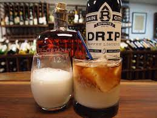

White Russian Recipe

A drink from the Big Lebowski
Ingredients
- 1 fluid ounce coffee flavored liqueur
- ½ cup cream or milk
- 1 fluid ounce vodka
Steps
- In a mixing glass, combine the coffee flavored liqueur, vodka and cream or milk.
- Pour over ice in a highball glass.